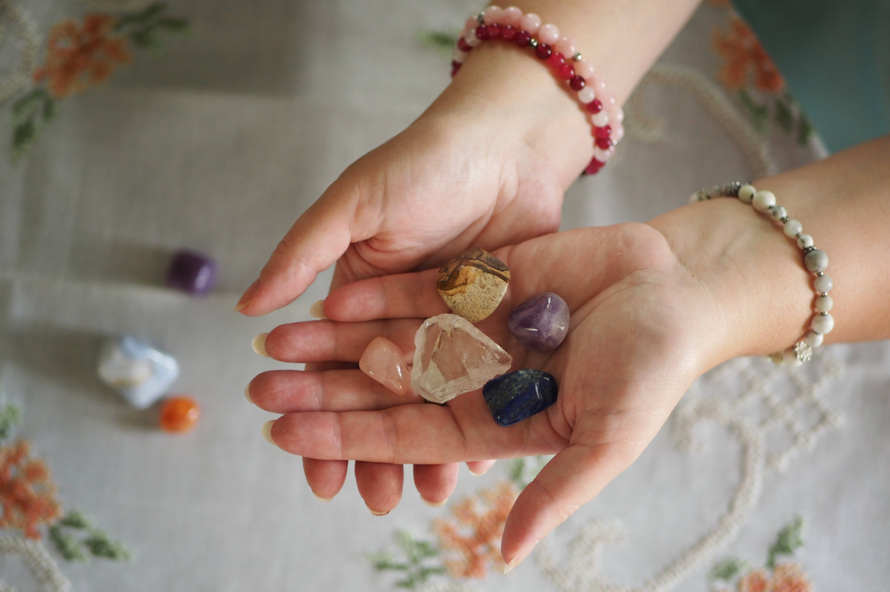
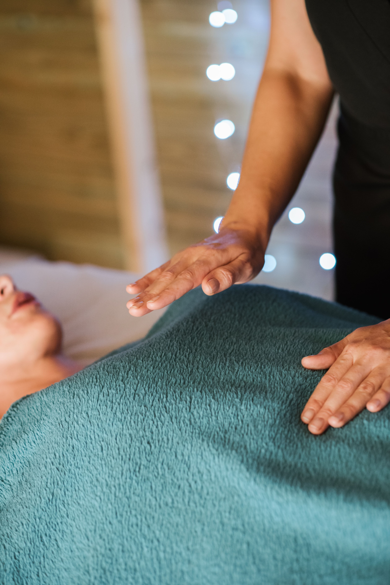
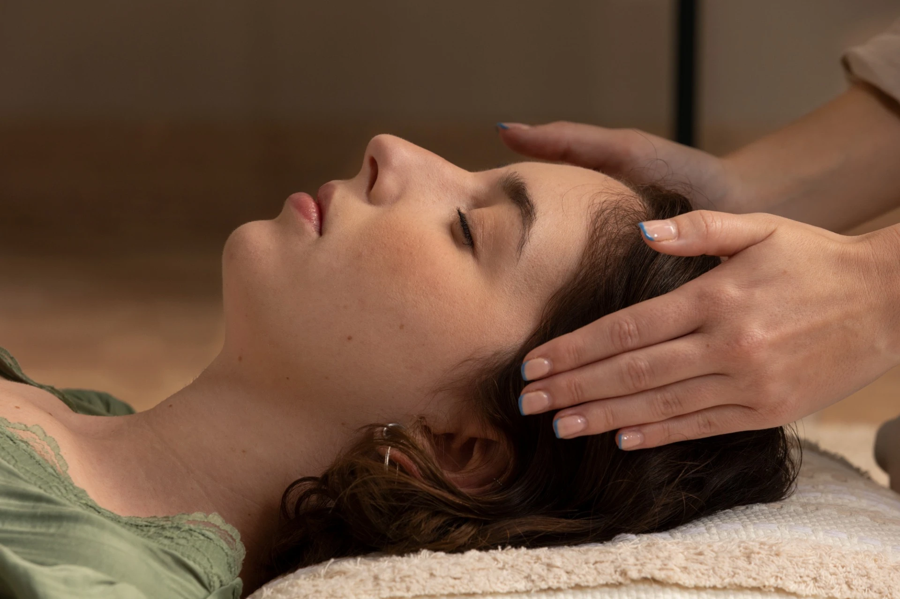
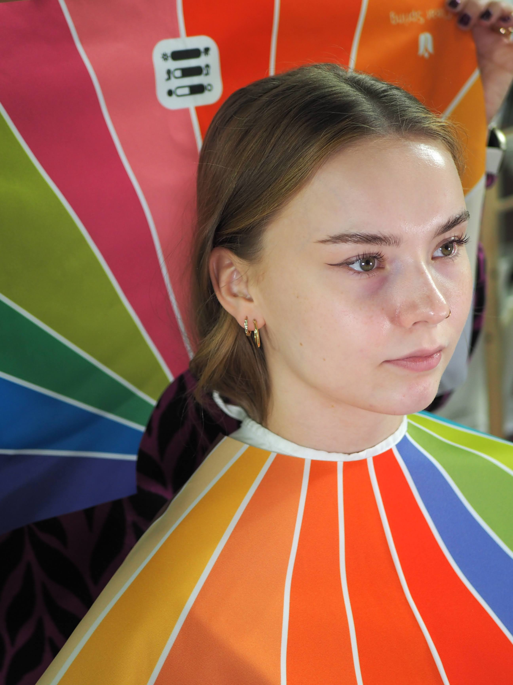
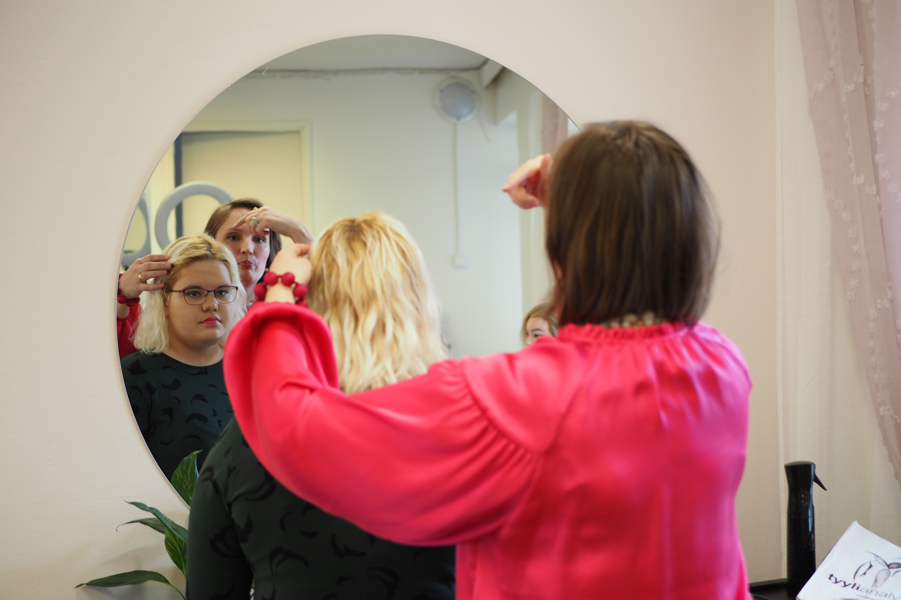

Since 2025, I have continued my work with colors, style and wellbeing under the name Risako Queen as a self-employed professional, using Risako's original social media accounts.
Risako Queen offers color and style analyses, as well as Reiki treatments.
Follow Risako Queen on social media:

Reiki is a Japanese method of healing and wellbeing in which energy is channeled through the hands. The energy does not come from the practitioner, but flows through them, so giving it does not drain the practitioner. Reiki is used all over the world, and it is not tied to any religion or political view. It is based on giving and sharing.
A treatment takes place in a calm environment, while you sit or lie in a comfortable position. I place my hands lightly on or just above the body, starting from the top of the head and going through all the chakras. The deep relaxation experienced during the treatment helps release stress, and many clients describe the treatment as being like a restful daytime nap. Experiences are always individual.
Reiki is a complementary treatment and never replaces medical care or treatment prescribed by a doctor.
A treatment lasts 30–60 minutes, as you choose.

Älä ole vihainen
Älä murehdi
Ole kiitollinen
Tee työsi
Olen ystävällinen muita ihmisiä kohtaan
Do not be angry
Do not worry
Be grateful
Do your work
Be kind to others

Color analysis is for anyone who wants to find their own best colors. Based on your natural coloring, we find out which seasonal color type you are. The method I use is based on 12 color palettes, with three different palettes for each season.
The right colors make your face glow and help you look younger and well-rested. They also soften dark circles and fine lines. And when you know your best colors, you save money, because you no longer make purchases you regret.
The analysis has two parts. In the first part, we identify the tones of your hair, eyes and skin with the help of measuring tools and colored scarves. In the second part, I teach you how to use your personal color palette: a tool that helps you choose clothes, makeup, glasses and hair color, and combine colors so that your wardrobe gets a clear structure.

Style analysis focuses on your body's proportions just as they are. Every body is good as it is, so we do not try to change it, but find the proportions and cuts of clothing that suit it best. You learn to recognize the most balanced shapes for your body, as well as your own inner lines, which determine the shapes of accessories and details that suit you. You also learn how optical illusions can be used in clothing.
Together we also define your personal style and go through how to make your wardrobe work even better as a whole. I also offer guidance on capsule wardrobes.
For groups
Color and style analyses are also available for groups, such as work communities, hen parties and birthday celebrations.
"I would never have believed that blue could suit me! Now I have to go and find blue in just the right shade."
"Since my color analysis, even complete strangers have come to compliment my colors!"
"I had always thought my hips were wide, but now I have to believe that my shoulders are actually wider!"
"In the style analysis, I became confident that I don't have to give up my own style as I get older. Fashion comes and goes, but my style stays."
"I could have fallen asleep. It was so relaxing."
"I don't know what happened, but in my mind I traveled somewhere very far away. It felt good and bright."
"I really felt myself relax. What could be more important than taking care of yourself?"
"This cannot be described in words; you have to experience it yourself. How can Heidi's hands be in several places on my body at the same time!"
Thank you for printing out my Risako Queen history!